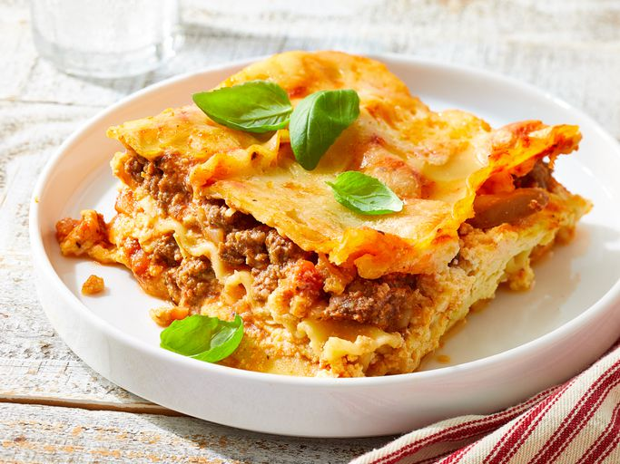

Lasagna

Description
This lasagna with uncooked noodles is super easy and fast to make. It is made with a prepared sauce and requires no boiling of the noodles.
Ingredients
- Meat sauce :
- 1 pound lean ground beef
- 1 onion
- 1 can of mashroom
- 1 jar of spaghetti sauce
- Cheese filling :
- cottage cheese
- ricotta cheese
- eggs
- Parmesan cheese
- Other :
- lasagna noodle
- shredded mozzarella cheese
Steps
- Gather all ingredient, and preheat the oven to 350 degrees F (175 degrees C).
- Make sauce: Heat a large skillet over medium-high heat. Cook and stir ground beef in the hot skillet until browned and crumbly, 5 to 7 minutes. Add onion and mushrooms; sauté until onions are transparent. Stir in pasta sauce and cook until heated through. Set aside.
- Make filling: Combine cottage cheese, ricotta, eggs, and Parmesan in a medium bowl and set aside.
- Spread a thin layer of meat sauce in the bottom of a 13x9-inch dish. Layer with uncooked lasagna noodles, cheese filling, mozzarella, and meat sauce. Continue layering until all components are used, reserving 1/2 cup mozzarella. Cover the dish with aluminum foil.
- Bake in the preheated oven for 45 minutes. Remove foil and top with reserved 1/2 cup mozzarella. Continue baking until cheese is melted, about 15 more minutes. Let lasagna stand for 10 to 15 minutes before serving.
- Serve warm and enjoy!
go back to recipes